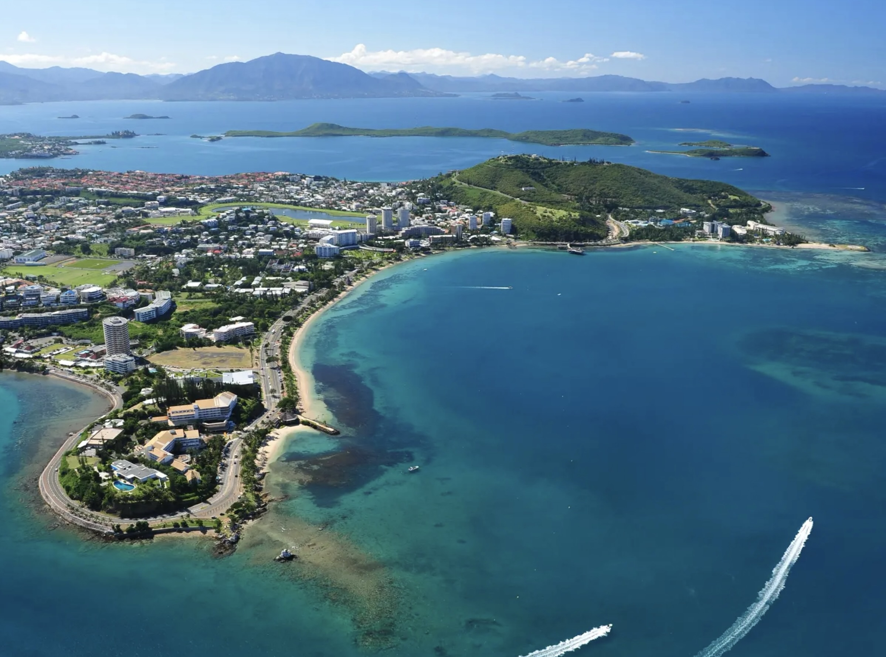

Von Neuseeland aus ging es mit UTA weiter nach Neukaledonien. Ich weiß heute gar nicht mehr, ob dort von Anfang an ein längerer Aufenthalt geplant war oder ob wir eigentlich nur einen kurzen Zwischenstopp einlegen wollten. Jedenfalls landeten wir auf dem Flughafen von Nouméa und zunächst passierte – nichts.
Neukaledonien war damals für viele Weltreisende eine Art Nadelöhr. Wer mit der UTA den Pazifik überquerte, kam fast zwangsläufig hier vorbei. Entsprechend bunt war die Mischung der Reisenden. Fast alle waren in unserem Alter, fast alle mit Rucksack unterwegs und auf einer mehrmonatigen Reise rund um die Welt. Man erzählte sich gegenseitig, woher man kam, welche Länder bereits hinter einem lagen und welche noch bevorstanden. Es war eine Zeit ohne Internet, ohne Smartphones und ohne Übersetzungsprogramme. Man verständigte sich mit Händen, Füßen und einem halbwegs brauchbaren Schulenglisch – und erstaunlicherweise funktionierte das meistens hervorragend.
Wir saßen zunächst mit etwa zwanzig Reisenden im Flughafengebäude fest. Niemand wusste so recht, wie es weitergehen sollte. Unter den Wartenden befand sich auch ein älterer ehemaliger amerikanischer Armeeoffizier jüdischer Herkunft, der uns später noch beschäftigen sollte.
Besonders schnell freundeten wir uns mit Tom und Marcy aus Portland in Oregon an. Die beiden hatten sich ein ganzes Jahr Auszeit genommen und waren bereits quer durch China gereist – eine bemerkenswerte Leistung in einer Zeit, in der dort kaum jemand Englisch sprach und elektronische Übersetzungshilfen noch Zukunftsmusik waren. Sie hatten schon die Hälfte ihrer Weltreise hinter sich und waren voller Geschichten. Mit ihnen verbrachten wir schließlich fast den gesamten Aufenthalt.
Irgendwann erschien ein kleiner Bus, der uns nach Nouméa bringen sollte. Zwanzig Leute mit ihrem gesamten Gepäck in einem viel zu kleinen Bus – das konnte nicht gutgehen. Natürlich gab es sofort ein paar Kandidaten, die zwei Sitzplätze für sich beanspruchten und keinerlei Anstalten machten zusammenzurücken. Tom, Marcy, Hilde und ich sorgten schließlich dafür, dass sich alle ein wenig vernünftig verhielten. Schließlich saßen wir alle im selben Boot.
Die Fahrt nach Nouméa war interessant. Die Landschaft wirkte auf mich fast afrikanisch. Auf den Hügeln standen helle, fast weiße Bäume, die ich noch nie zuvor gesehen hatte. Ganz anders als die üppigen Wälder Neuseelands.
Wir stiegen zunächst im Château Royal Beach Resort an der Anse Vata Bay ab, einem schön gelegenen Hotel direkt am Meer. Am Nachmittag gingen Hilde und ich an den Strand des Plage du Méridien. Das Wasser war kristallklar und ich schwamm ein Stück hinaus. Plötzlich tauchte vor mir ein großes Tier mit einer Flosse auf. Mein erster Gedanke war: Hai! Ich erschrak gewaltig und machte mich so schnell wie möglich wieder Richtung Strand. Erst später wurde mir klar, dass es vermutlich ein Delfin gewesen war, der eher mit mir spielen wollte als mich zu fressen.

Am Abend machten wir einen langen Spaziergang am Strand. Fischer standen bis zur Hüfte im Wasser und warfen ihre Netze aus, während die Sonne langsam im Meer versank. Das Licht war wunderschön und ich machte einige Fotos, die ich bis heute gerne anschaue.
Später saßen wir mit Tom und Marcy an der Hotelbar. Dort gesellte sich auch der amerikanische Ex-Offizier zu uns. Kaum hatte er erfahren, dass wir Deutsche waren, begann er über die deutsche Vergangenheit und den Nationalsozialismus zu sprechen. Die Unterhaltung wurde schnell unerfreulich. Wir hielten dagegen, dass wohl jede Nation dunkle Kapitel ihrer Geschichte habe – die Vernichtung der Indianer in den USA, die Kolonialpolitik vieler europäischer Staaten oder andere historische Verbrechen. Nach einer Weile verlief die Diskussion im Sande.
Am nächsten Tag gingen wir zur französischen Botschaft. Mein ehemaliger Laborchef Denis Gospodarowicz hatte mir erzählt, dass sein Bruder die Botschaft leite und er sich sicher über den Besuch freuen würde. Vielleicht hätte er sogar eine Übernachtungsmöglichkeit. Wir klingelten, warteten eine Weile, aber niemand öffnete. Pech gehabt!
Nachdem unser Aufenthalt im UTA-Hotel beendet war, mussten wir uns eine andere Unterkunft suchen. Wir landeten schließlich in einer kleinen Pension, die überwiegend von Franzosen bewohnt wurde. Dort fühlten wir uns von Anfang an unwillkommen. Wir sprachen Englisch, die anderen taten demonstrativ so, als würden sie uns nicht verstehen. Die Botschaft war eindeutig: Hier sprach man Französisch oder besser gar nicht. La Grande Nation war hier noch total lebendig!
Das Zimmer war ebenfalls unerfreulich. Das Bett war völlig durchgelegen, die Metallfedern drückten von unten durch, und auf der Kunststoffmatratze schwitzten wir die halbe Nacht. Schließlich nahmen wir die Matratze einfach vom Bett herunter und legten sie auf den Boden. Dort schlief es sich wenigstens etwas besser. Beim Frühstück änderte sich die Stimmung nicht. Die französischen Gäste begegneten uns weiterhin mit demonstrativer Gleichgültigkeit. Vielleicht hatten wir einfach Pech mit dieser Unterkunft.
Eigentlich hätten wir Neukaledonien gerne intensiver kennengelernt. Das riesige Korallenriff vor Nouméa gehört zu den schönsten der Welt und stand damals schon auf unserer Wunschliste. Doch dafür fehlte uns die Zeit. Außerdem befand sich die Insel mitten in den politischen Unruhen zwischen der französischen Verwaltung und der Unabhängigkeitsbewegung der Kanaken. Manche Ausflüge waren deshalb gar nicht möglich.
So blieb Neukaledonien für uns weniger wegen seiner Sehenswürdigkeiten in Erinnerung als wegen der Menschen, denen wir dort begegneten. Vor allem Tom und Marcy wurden zu Freunden auf Zeit, denen wir auf dem Rest der Reise noch öfters begegnen würden. Genau das war vielleicht das Schönste an dieser Reise. Man traf Menschen aus aller Welt, verbrachte einige Tage miteinander, tauschte Geschichten aus und ging dann wieder getrennte Wege – wohl wissend, dass man sich wahrscheinlich nie wiedersehen würde. Bei Tom und Marcy war das anders. Wir besuchten sie nach vielen Jahren in Portland und es war ein wunderbares Wiedersehen.
Als wir schließlich wieder in die UTA-Maschine stiegen und Richtung Indonesien abhoben, waren wir deshalb fast ein wenig erleichtert. Das nächste Abenteuer wartete bereits auf uns.